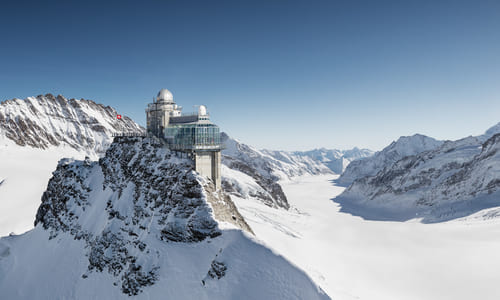
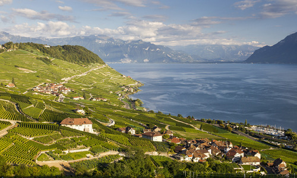
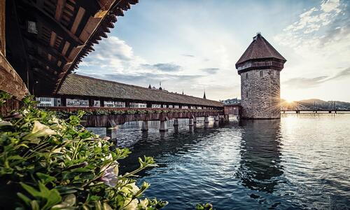
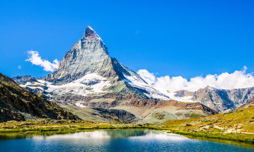
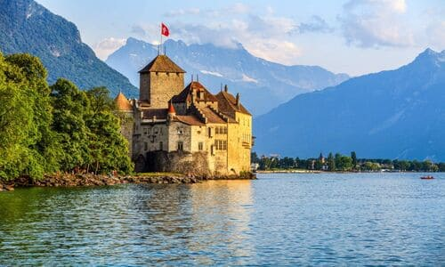
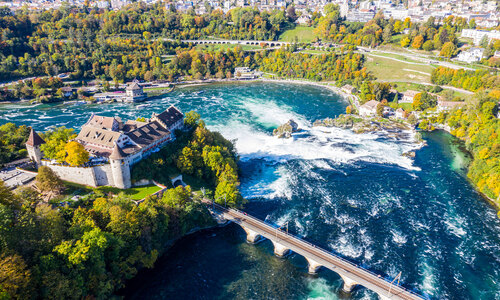
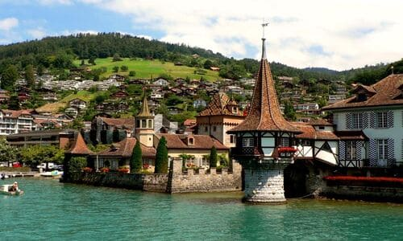
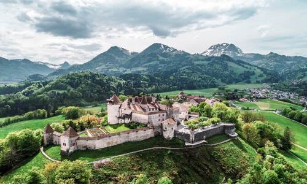
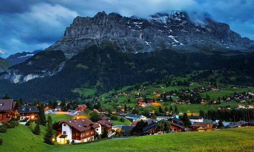

10 Best Places To Visit in Switzerland

Jungfraujoch
The Jungfraujoch is a col in the Bernese Alps accessible by railway, ending at Europe’s highest mountain station. Highlights include views of specracular mountain summits like the Eiger, Mounch and Jungfrau, and views of the large Eiger Glacier that nestles below them. The Sphinx observatory, one of the highest astronomical sighting stations in the world, is located here as well.
Lavaux, Vineyard Terraces
The 800 hectare Lavaux vineyard is not only UNESCO-listed, but also the largest terraced vineyard in Switzerland. The terraces stretching all along the way form a magnificent landscape. Steeply sloping vineyards, neatly arranged on terraces, and the 830 hectares of terraced vineyards in the Lavaux region receive alot of sunlight, which is an important factor in the production of excellent wines.


Kapellbrucke (Chapel Bridge)
Lucerne’s landmark is considered to be Europe’s oldest covered bridge. It was built in the 14th century 1332 and was originally a part of the city fortifications. The pictorial panels, which were incorporated in the 17th century, contain scenes of Swiss history as well as the Lucerne’s history, including the biographies of the city’s patron saints, St. Leodeger and St. Maurice.
Matterhorn
The Matterhorn, Switzerland’s iconic pointed peak is one of the highest mountains in the Alps. On the border with Italy, this legendary peak rises to 4478 meters. At the foot of this mighty peak, lies the charming village of Zermatt, a top international resort with horse-drawn carriage rides, quaint chalets, and world-class restaurants and hotels. To preserve the air quality and peaceful ambience, motorized vehicles are banned in the village.


Lake Geneva
Is the Europe’s largest Alpine lake, straddles the Swiss/Frech border, and laps at the shores of some of Switzerland’s most popular cities. The city of Geneva sits between pretty snowcapped peaks at the point where the Rhone spills into Lake Geneva. The Jet d’Eau, a fountain in Lake Geneva shooting water 150 meters into air, is a famous landmark. At the foot of the Alps, on Lake Geneva, Montreux hosts the world-famous Montreux Jazz Festival in June/July.
Lake Lugano
Lake Lugano is at the southernmost tip of the Tessin, the holiday region south of the ridge of the Alps, and it reaches its arms out into Italy. Thanks to the mild Mediterranean climate, there are even citrus fruit trees growing here, and visitors can sunbathe under palm trees. The lake has a number of different branches and is surrounded by mountains: Monte Generoso is the highest mountain by Lake Lugano, at about 1700 m.


Rhine Falls
Spanning 150 meters, the Rhine Falls (Rheinfall) at Schaffhausen are the largest falls in Central Europe. The best time to visit is during June & July when the mountain snow melts, and the falls swell in volume to spill over 21-meter-high ledge of Jurassic limestone. Boat trips up the Rhine provide excellent views of the falls, as do the viewing platforms on both sides of the river.
Oberhofen Castle
One of the stunning tourist attractions in Switzerland, Oberhofen Castle is sitting on the shore of Lake Thun and is neighbors with 2.5 hectare park on one side. Originally, the castle was constructed in the 13th century but has been a part of numerous renovations since then. In the present day, one can witness the finely blended architectural styles of Bernes Baroque, Romantic facades, Prussian, and more. This is also a living museum that showcases the ancient times of the families.


Gruyeres
It cover an area of just 28.4 square kilometers and is home to around 2000 permanent residents - but it makes up for it with plenty of things to do, including the 13th century Castle of Gruyeres and its 2 small arts and regional museums, as well as Saint-Germain Castle, which was bought by Swiss surrealist painter and sculptor H.R. Giger, and it now houses a meseum dedicated to his work. The Tibet Museum, housed in an old church in town, is also worth a visit.
Grindelwald
The Eiger village of Grindelwald in the Bernese Oberland lies embedded in a welcoming and green hollow, surrounded by a commanding mountainscape with the Eiger north face and the Wetterhorn. This mountainscape and the numerous lookout points and activities make Grindelwald one of the most popular and cosmopolitan holiday and excursion destinations in Switzerland, and the largest ski resort in the Jungfrau region.
